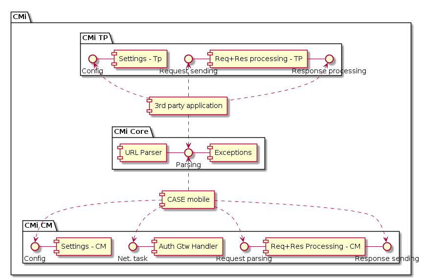

3. Architecture Reference
3. Architecture Reference
Architecture
CMi SDK v4 consist of 3 components:
- CMi Core - core module - contains common classes, constants used by other modules
- CMi TP - third party module - used by TPA to create requests and processing responses for supported scenarios
- CMi CM - case mobile module - used by Case Mobile application to process requests from TPA, communicate with MEP and return responses to TPA
Components

Interapp Communication
Fourth generation of CASE Mobile integration SDK with revised inter-app communication based on app links and universal links. A/U links are feature of recent versions of Android and iOS. They are enhancing for UX flows, where user is required to switch context from one application to another.
For detailed description, refer to official documentation:
A/U links have slightly different behavior on iOS and Android. On iOS, request made by opening URL (that applications in listening to) causes OS to pass control to application by calling method in AppDelegate. Android can declare in manifest, which application component should be invoked by opening particular URL.
CMi SDK provides API for processing URL requests, but it does not restrict nor force (Android) application to use particular component to receive URL requests from OS. However, CMi SDK will use URLs with particular form and applications should use it in configuration of A/U links.
To setup A/U links properly, refer to official documentation (links above).
A/U links in CMi SDK
CM has its own A/U links that will be used by CMi TP to send requests to CM. TPA must also have its A/U link to receive responses from CASE mobile. Before using CMi SDK, value of TPA’s A/U link has to be registered in MEP system.